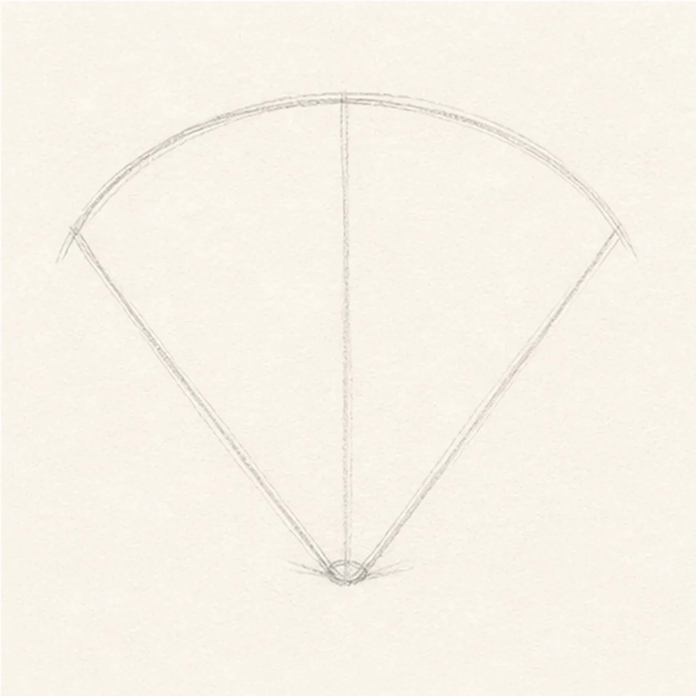
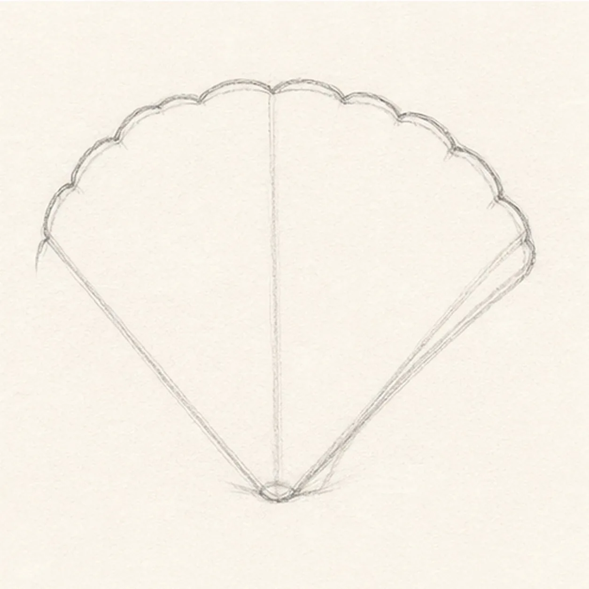
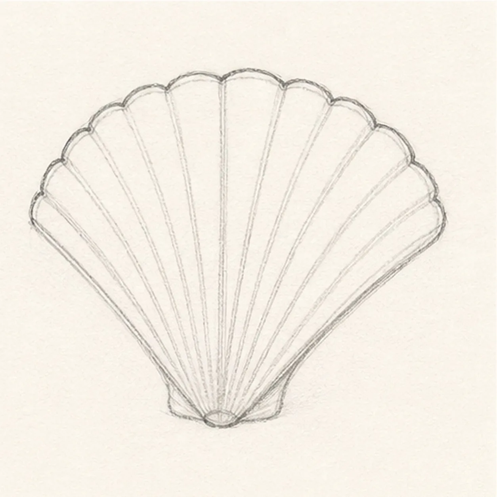
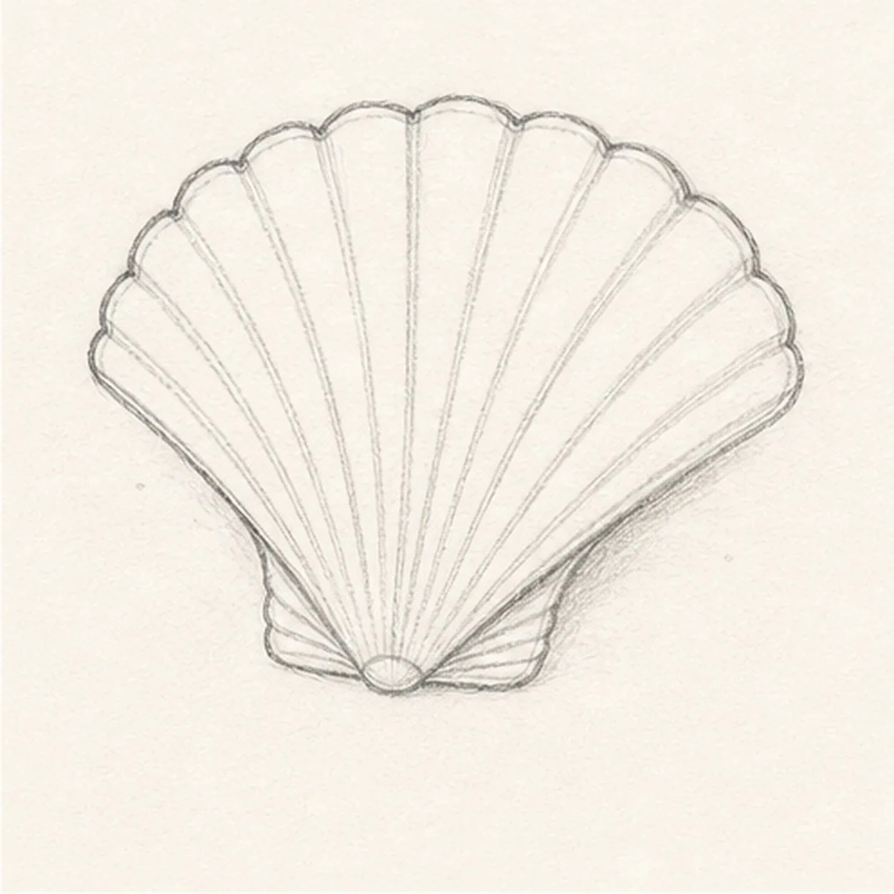
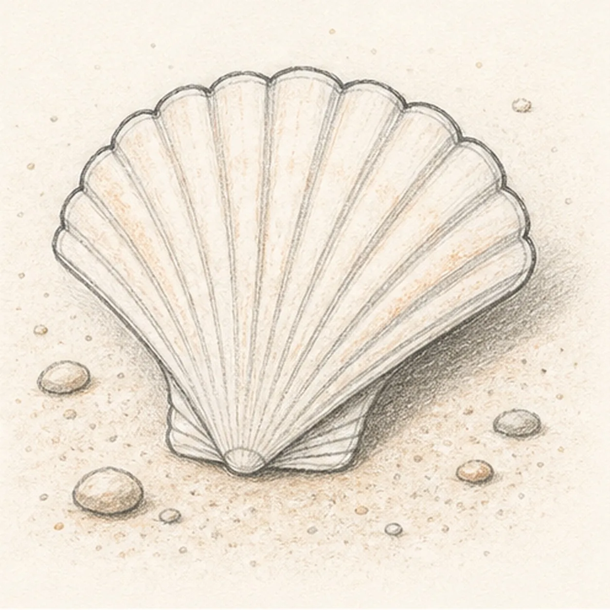

From the archive
Let's draw a seashell
Treat this as one small practice round: build the subject lightly, notice the shapes, then darken only the lines that help the finished sketch.
-
01

Block the shell fan
Draw a small hinge circle near the bottom, then open a wide fan shape above it with a light center guide.
Sketch tip: Make the shell wider than it is tall. That broad fan shape is the main read.
-
02

Scallop the edge
Turn the outer arc into rounded bumps, keeping the left and right sides angled back toward the hinge.
Sketch tip: The scallops do not need to match perfectly. Slightly uneven bumps feel more natural.
-
03

Pull the ridges
Draw curved ridge lines from the hinge toward the scalloped edge, spacing them wider as they fan outward.
Sketch tip: Aim each ridge at a scallop valley or bump. That makes the shell structure easier to follow.
-
04

Define the hinge
Darken the small hinge area and add short lower fold marks where the ridges gather near the base.
Sketch tip: Keep this area compact. Too many dark folds at the bottom can make the shell look heavy.
-
05

Set it in sand
Add a soft cast shadow, a few small pebbles, scattered sand dots, and light peach-tan shading across the shell.
Sketch tip: Put more shadow on one side. That simple choice helps the pale shell lift off the sand.
-
06
Finish the shell sketch
Strengthen the shell outline, scallops, ridges, hinge, sand marks, shadow, and peach shading without adding waves or extra shells.
Sketch tip: Leave plenty of white paper on the ridges. The shell should feel sketched, not fully colored.